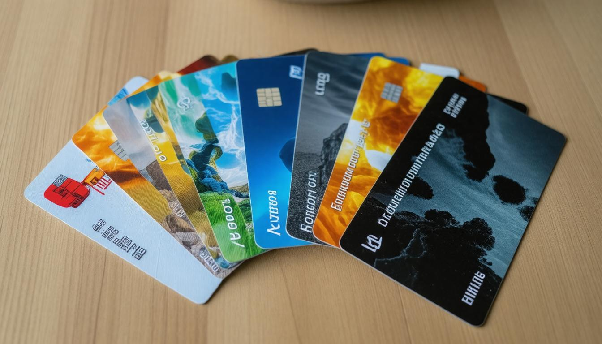
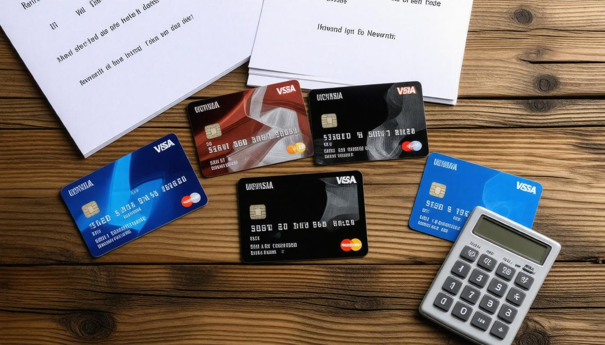

Best Gas and Fuel Credit Cards: Top Gas Credit Card Options
When it comes to managing your expenses, fueling up your vehicle doesn’t have to feel like a drain on your wallet. You might be surprised to discover that by choosing the right fuel and gas credit card, you can turn every trip to the gas station into a chance for savings or rewards. Whether you’re commuting daily, embarking on road trips, or just running errands, these specialized cards can help you earn cash back or valuable points with each fill-up. In this article, we’ll sift through the best options available, pointing out which cards can work to your advantage depending on your spending patterns and lifestyle. So buckle up; the journey into savings starts here!
Fuel and gas credit cards are specialized credit cards that provide rewards or cash back specifically for purchases made at gas stations. These cards often offer benefits such as savings on fuel prices or points that can be redeemed for cash back, making them advantageous for frequent drivers who want to optimize their spending on fuel.

Top Fuel and Gas Credit Cards
First on our list is the Blue Cash Preferred® Card from American Express. This card stands out for its generous cash back rewards system, especially for frequent drivers. You’ll earn a remarkable 3% cash back at gas stations—that's money back in your pocket every time you fill up. It also offers a welcome bonus of $300 after you spend $3,000 in the first six months, making it enticing for families managing transportation needs and grocery bills. Think about how much you spend on gas and groceries; this card can transform ordinary expenses into extraordinary rewards!
Next up, we have the Citi Custom Cash® Card. Its appeal lies in its flexibility, allowing cardholders to earn 5% cash back on their most significant spending category each billing cycle, up to $500. This means that if your expenses fluctuate from month to month—perhaps one month you're dining out more and the next you're filling your tank—you can still reap maximum benefits without being tied down to one category. Its adaptability makes it ideal for gas purchases as well as various categories throughout the year.
For those who travel frequently, look no further than the U.S. Bank Altitude® Connect Visa Signature® Card. Designed with the traveler in mind, this card provides an impressive 4X points on gas purchases along with additional perks such as TSA Pre?® fee reimbursement, making airport navigation less cumbersome. With no annual fee, it enhances your gas mileage rewards while suggesting that adventure awaits just around the corner.
| Card Name | Gas Rewards | Annual Fee | Best For |
|---|
| Blue Cash Preferred® from Amex | 3% cashback | $95 | Families and households |
| Citi Custom Cash® Card | 5% cashback up to $500 | $0 | Flexible spenders |
| U.S. Bank Altitude® Connect Visa | 4X points | $0 | Frequent travelers |
Understanding these options will help you select a card that fits your lifestyle, catering to regular trips or cross-country moves—all while earning significant rewards along the way. As we move forward, let’s explore even more rewarding options that maximize benefits and savings for savvy consumers.
Best Cards for Rewards and Cashback
Maximizing rewards and cashback is essential when selecting a fuel and gas credit card. Many options cater to different spending habits, making it easier for drivers to accumulate significant benefits simply by using their cards during regular fueling or driving activities.
For instance, cards like the Wells Fargo Autograph? Card stand out by offering an impressive 3X cash back on gas purchases. This means every time you fill up your tank, you're not just fueling your vehicle; you're also earning rewards that can lead to substantial savings over time.
Moreover, the PenFed Platinum Rewards Visa Signature® Card takes it even further by offering 5 points per dollar spent on gas! With this card in hand, those seemingly mundane trips to the gas station transform into opportunities for energetic earning.
Now, while high reward rates sound fantastic, it's important to consider how cashback translates into real savings over time. Let me share a brief story that illustrates this.
Karen, who drives around 20,000 miles annually, was once skeptical about whether fuel cards would genuinely offer her any advantage. However, she took the plunge and opted for the Citi Custom Cash® Card. To her surprise, she began saving nearly $600 each year purely from the cash back rewards her card provided. “I never imagined I could save this much just by using the right credit card!” Karen exclaimed. Her experience highlights how integrating a smart credit choice with daily expenditures can yield unexpected financial gains.
As appealing as these rewards may be, keep in mind that some credit cards come equipped with enticing welcome offers designed to encourage new cardholders.
For instance, the Blue Cash Preferred® from American Express tempts potential users with a handsome $300 bonus after reaching a specific spending target within the first few months of account activation. Such welcome bonuses not only maximize initial rewards but provide immediate gratification for choosing wisely—essentially giving you a head start on your cashback journey. This can make a significant difference if you're looking for a nudge in your quest for benefits associated with gas purchases.
After weighing the impact of rewards and welcome offers, it's crucial to shift focus towards understanding various charges that might diminish those hard-earned benefits.
Fees and Annual Charges
One of the most important aspects to consider when selecting a fuel or gas credit card is the variety of fees that can impact your overall costs. Effectively balancing rewards with fees allows you to maximize net savings while minimizing unpleasant surprises. Knowing what fees are associated with your credit cards helps ensure you're actually saving money in the long run rather than inadvertently increasing your expenses.
Types of Fees
Annual Fees: For example, the Blue Cash Preferred® Card from American Express comes with an annual fee of $95. While this may seem steep at first glance, it’s crucial to weigh this against the high cashback rates it offers for both gas and groceries. If you regularly fill up your tank and buy your family's groceries using this card, those rewards can easily eclipse the fee, turning an expense into a valuable investment.
Foreign Transaction Fees: If travel is part of your lifestyle, you'll want to pay attention to foreign transaction fees. Thankfully, the U.S. Bank Altitude® Connect Visa Signature® Card charges no foreign transaction fees, making it an attractive choice for international travelers who don't want extra charges sneaking into their expenses every time they make a purchase abroad.
Late Fees: Lastly, it's vital not to overlook potential late fees ranging from $25-$37 that most credit cards impose when payments are missed. These can significantly affect your savings regarding cashback rewards. Keeping track of payment due dates is essential to ensuring you reap all the benefits without falling into these penalizing traps.
The heart of effective budgeting lies in understanding how these components fit together; regularly checking your account usage against fee structures ensures maximized rewards!
As you sift through different credit card offerings, remember that discerning which fees are acceptable is part of smart financial planning. Gaining insights into how to manage costs effectively will guide you toward maximizing value while keeping your finances healthy.
Cost Control and Fuel Discounts
Smart cost control isn’t just about being frugal; it's about transforming regular spending into meaningful savings, particularly when it comes to filling up your gas tank. With the right gas credit card, you can capitalize on incentives that change the way you approach each visit to the pump. One of the most prominent features offered by many gas cards is direct fuel discounts, which can range from $0.01 to $0.25 per gallon. While this may seem small at first glance, those pennies add up quickly over time—especially for daily commuters or frequent travelers.
Fuel Discounts
If you consistently fill your vehicle with 15 gallons of gas per week, a $0.05 discount translates to $3 in savings each visit. Over a year, that’s an impressive $156 saved just on fuel alone! Companies like Shell provide these discounts through their Shell Fuel Rewards® Card, allowing you to save while making necessary purchases. It’s noteworthy that co-branded gas cards often provide friends and family opportunities to join your savings journey by allowing sharable rewards.
Direct fuel discounts turn everyday transactions into valuable rewards, reinforcing the notion that even small savings can lead to substantial economic advantages.
It's also important to consider additional benefits that come with many fuel cards. Some of these cards include cashback features on other purchases, meaning your overall expenditure can reward you in multiple ways. While not every card offers the same level of reward, understanding reward structures can help you align your spending habits with your financial goals.
Balance Transfer Features
Another attractive aspect of gas credit cards is their balance transfer capabilities. For example, many fuel cards, such as the Discover it® chrome, offer introductory periods with 0% APR on balance transfers. This feature allows users to bring over debt from higher-interest accounts without incurring interest charges during a promotional period—a solid strategy for managing existing debt while benefiting from reward systems that accompany these cards.
While enjoying these perks is enticing, analyzing all aspects of any potential card is crucial before making a decision. Up next, we will explore how various card features compare to ensure you find the best fit for your needs.
Comparing Card Features

In an age where financial choices abound, comparing the features of fuel and gas credit cards is akin to uncovering hidden treasures in a vast landscape of options. When you take the time to look deeply into the benefits offered by each card, you equip yourself with the knowledge necessary to maximize your rewards based on your specific spending habits.
Side-by-Side Analysis
Let's use a practical analogy to drive this point home. Much like choosing a vehicle that best fits your lifestyle—whether it's a compact car for city driving or a rugged SUV for adventures—picking the right credit card should align with how you use it most. For example, Citibank's Custom Cash Card shines when it comes to rewards flexibility, giving its users a chance to earn elevated cash back on their highest spending category each month, which could be anything from groceries to gas.
In contrast, the Shell Fuel Rewards® Card offers targeted savings directly tied to fuel purchases. While it might appear appealing if you frequently refuel at Shell stations, those focused savings may not provide as much overall value if you also spend significantly in other categories.
Understanding these nuances becomes crucial as we explore real user experiences, revealing deeper insights about the cards' true value.
User Reviews
Take Ben, for instance—a dedicated delivery driver who discovered substantial savings after switching from his gas station-specific card to the U.S. Bank Altitude® Connect Visa Signature®. He expressed that "I get more value across other purchases, not just fuel." This simple realization underscores the importance of selecting a versatile card that meets all aspects of your life, rather than one that is merely good at a singular task. Ben's experience highlights not just his initial motivations but also a newfound appreciation for broader shopping rewards.
By prioritizing your diverse spending patterns over merely focusing on direct fuel discounts, you stand to benefit far more in terms of rewards and overall savings. Remember, every feature matters; whether it’s annual fees, interest rates, or additional perks such as travel insurance or cashback on everyday purchases—factor them all into your assessment.
Gaining actionable insights can be beneficial when making your selection among numerous options. Understanding individual features of each card can lead to smarter financial decisions.
Tips for Choosing the Best Card

Making a wise choice in selecting a fuel and gas credit card means understanding how it will impact your daily expenses. One crucial aspect to consider is usage analysis. Think about where your money goes on a monthly basis—whether it’s on gas, groceries, or other purchases. By tracking your spending patterns, you're better equipped to pick the card that aligns with your habits.
For instance, if you find yourself filling up at the pump frequently while also making grocery runs, a card like the Blue Cash Preferred® from American Express might be ideal due to its attractive rewards structure for both categories.
As another tip, consider the long-term benefits of the card options on your list. While some cards entice users with big sign-up bonuses and initial high rewards rates, think critically about what these figures mean after the first year. Knowledge is power, and oftentimes, cards that may seem appealing at first glance can lead to hidden costs over time, such as annual fees that outweigh the short-lived incentives. Instead, opt for cards that promise sustainable returns over the long haul; reliability in rewards can significantly improve your financial standing as time goes on.
The most valuable aspect is consistency—not just momentary gains. Some users flock to cards that offer quick rewards but overlook their potential for cumulative benefits. Therefore, ensuring that the card not only meets your immediate needs but is also advantageous well into the future is essential.
In our digital age, we have tools at our disposal that simplify this process significantly. Utilize comparison websites and calculators specifically designed for evaluating credit cards to gain insight into which card would benefit you most based on specific usage metrics. These resources take the guesswork out of determining which card meets your lifestyle's unique requirements, allowing you to observe side-by-side comparisons of different transactions, fees associated, and reward earning potential.
Weighing these factors carefully will help you streamline your decision-making process and ensure that you discover a card perfectly tailored to meet your financial needs while maximizing those fuel rewards.
In essence, thoughtful consideration of your spending habits and potential benefits will guide you to the best fuel and gas credit card available. This proactive approach not only ensures smart financial choices but also enhances your overall purchasing experience.